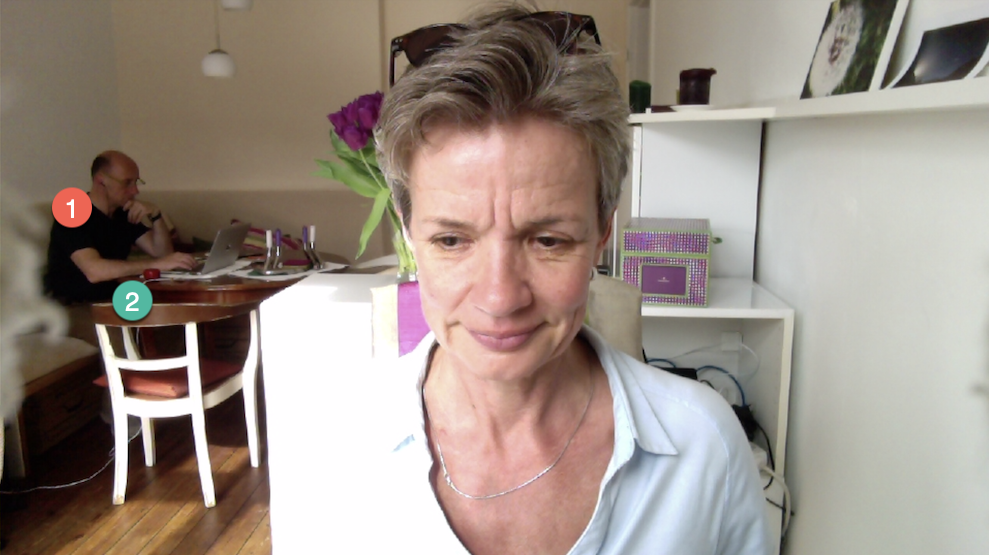

In die Falle gelaufen beim Coworking@Home
Unterbrechungen, auch kurze, sind der Produktivitätskiller #1. Und es erfordert die ganze Frau und den ganzen Mann, sich ihnen zu widersetzen und im Fluss zu bleiben. Das habe ich während des Homeoffice in Corona-Zeiten gerade sehr deutlich erfahren.
Nicht, dass mir das unbekannt gewesen wäre. Nein, ich weiß das schon lange und werde nicht müde in meinen Zeitmanagement-Seminaren darauf hinzuweisen. Es dann aber so deutlich selbst vor Augen geführt zu bekommen, ist nochmal etwas anderes. Erfahrung validiert Theorie.
Hier meine derzeitige Homeoffice-Situation: Ich arbeite am Schreibtisch mit Blick nach draußen – und mein Freund (1 im Bild) sitzt am Wohnzimmertisch mit seinem Rechner.

Das funktioniert eigentlich ganz gut. Wir machen ja beide keinen Krach. Bei gelegentlichen Telefonaten oder online Sitzungen weicht er in die Küche aus oder geht spazieren.
Wir arbeiten nicht zusammen an Projekten, sondern coworken nur. D.h. wir verfolgen unsere je eigenen Projekte und sitzen dabei einfach nur im selben Raum.
Dennoch tauschen wir uns natürlich über meine Projekte aus, ich stelle ihm Arbeitsergebnisse vor und habe auch Fragen. Und dabei ist es dann passiert: Mein Freund hat deutlich „Stopp!“ gesagt.😳
Was war der Grund für seine heftige Reaktion? Ich war mir dessen gar nicht richtig bewusst, aber während ich so am Schreibtisch vor mich hinwerkle, drehe ich mich immer mal wieder um und spreche ihn an. Mal will ich etwas zeigen, mal seine Unterstützung bei einer Entscheidung… Einfach so, ganz natürlich passiert das. Warum auch nicht, er sitzt ja gleich da.
Doch genau das ist das Problem!
Wenn ich meinen Freund mit meinem Anliegen anspreche, unterbreche ich ihn in seiner Arbeit. Er ist konzentriert bei seiner Sache – und in diese Konzentration grätsche ich rein mit „Duhuuu, kannst du mir mal kurz helfen?“ oder „Oh, schau mal, wie ich jetzt meine Projekte mit Notion organisiere!“
Mein Freund interessiert sich dafür grundsätzlich, was mich bewegt, und er hat immer versucht, ganz lieb dann von seiner Arbeit aufzuschauen, um mir die Aufmerksamkeit zu schenken, die ich mir gewünscht hatte. (Allerdings war mir ein gewisser genervter Gesichtsausdruck auch nicht ganz entgangen.)
Neulich dann aber war es vorbei mit lieb sein. Da konnte er nicht mehr und hat eine Ansage gemacht: „Stopp! Bitte! Deine spontanen Ansprachen reißen mich aus meiner Arbeit heraus. Das macht mich unzufrieden, wenn ich nicht schaffe, was ich mir vorgenommen habe.“
Oha! Das war sehr deutlich. Er hat es freundlich gesagt, aber auch bestimmt. Er hat eine klare Grenze gezogen. Das hat ihn Kraft gekostet, denn er wollte mir ja nicht vor den Kopf stoßen. Das Muster in unserem Coworking war nun für ihn jedoch zu sehen und hat ihn nicht glücklich gemacht.
Wir haben uns dann auf ein Zeichen geeinigt, mit dem er signalisiert, ob er ansprechbar ist oder nicht. Er teilt sich seine Zeit mit der Pomodoro Technik ein, die seine Aufmerksamkeit in 25 Minuten Blöcken fokussiert. Während bei ihm „eine Tomate läuft“ und er ungestört sein möchte, stellt er nun einen roten Küchenwecker in Form einer Tomate für mich sichtbar auf den Tisch (2 im Bild). Wenn ich mich umdrehe und das Signal sehe… verkneife ich mir eine Äußerung.
Ich merke, dass mir das nicht so leicht fällt. Für mich ist etwas in der Situation ja ganz dringend. Diese Spannung würde ich gern durch eine kurzen Austausch mit meinem Freund lösen. Vielleicht komme ich sonst bei meiner Arbeit auch nicht so gut weiter…
Aber es hilft nichts! Mein Problem darf ich nicht zu seinem Problem machen. Dass ich mich entlaste, kann nicht zu seiner Belastung werden.
Wie gesagt: Ich weiß das alles – und dennoch war es für mich jetzt eine kleine Überraschung es so deutlich am eigenen Leibe zu spüren.
Allerdings bestärkt mich diese Erfahrung in meinem Wissen und ich kann nur umso deutlicher sagen: Vermeiden Sie Unterbrechungen!
Unterbrechungen sind ein gigantischer Produktivitätskiller und eine Quelle von Frustrationen. Addieren Sie zu Ihrem Problem nicht noch ein Problem bei einem Kollegen.
Natürlich können Sie nicht vermeiden, dass Sie in eine Situation kommen, bei der Sie nicht weiter wissen und Hilfe brauchen. Oder Sie wollen jemandem eine Information geben, die für denjenigen bestimmt hilfreich ist. Das ist alles verständlich, menschlich, sogar lieb gemeint. Deshalb ist es jedoch in dem Moment nicht der Produktivität anderer förderlich!
Ebenso natürlich ist es auch, Kolleginnen helfen zu wollen. Sie finden es unfreundlich, nicht offen für eine Frage zu sein, deren Beantwortung ihnen leicht fällt und der anderen weiterhilft. Das ist verständlich, menschlich und ganz lieb. Deshalb ist es jedoch in dem Moment einer Unterbrechung nicht ihrer Produktivität förderlich!
Wenn immer nur die Produktivität desjenigen zählt, der gerade nicht weiterkommt, dann verkommt Arbeit zu einer nicht enden wollen Reihe von „Feuerwehreinsätzen“ der anderen, die unterbrochen werden. Das darf nicht sein. Das erzeugt Chaos, weil jeder Verlässlichkeit der Boden entzogen wird.
Es gilt also, eine Balance zu finden. Eigene konzentrierte Arbeit ohne Unterbrechung ist ins Gleichgewicht zu bringen mit der Unterstützung anderer. Niemand ist bei der Arbeit eine Insel. Aber ohne Rückzugsmöglichkeit kommt Arbeit schlecht voran.
Sie müssen also das Kunststück vollbringen, sowohl fokussiert wie auch erreichbar sein. Wie geht das?
Das geht nur im Wechsel. Beiden Anforderungen ist ausdrücklich Zeit einzuräumen. Mit „ausdrücklich“ meine ich: erkennbar, geplant, verlässlich.
- Machen Sie erkennbar, in welchem Modus Sie sind. Sind Sie konzentriert und wollen nicht unterbrochen werden? Oder sind sie offen dafür, angesprochen zu werden? Der rote Wecker auf dem Tisch ist für meinen Freund und mich jetzt das Zeichen für seinen Modus. Überlegen Sie, was für Sie passt: Tür zu? Ein Wimpel auf dem Tisch? Kopfhörer auf dem Kopf? Werden Sie kreativ – und kommunizieren Sie die Bedeutung klar gegenüber Ihren Kollegen. Sie wollen ja hilfreich bleiben, nur eben in etwas geordneterer Manier.
- Planen Sie die Zeiten, in denen Sie konzentriert arbeiten wollen. Machen Sie sich Einträge im Kalender (die womöglich auch als Zeichen für andere dienen können, falls die Einblick in Ihren Kalender haben). Arbeiten Sie nach einem Rhythmus. Sie müssen Ihre Zeit nicht in 25-Minuten-Blöcke teilen, es können auch 45 Minuten oder 90 Minuten sein, die Sie konzentriert und ungestört arbeiten wollen. Aber legen Sie das vorher fest und teilen Sie auch diesen Vorsatz ihren Kolleginnen mit. Vielleicht wirkt solche Systematik ja sogar ansteckend…
- Halten Sie sich an Ihre eigenen Regeln. Das bedeutet aber nicht nur, dass Sie planen und nach Plan sich erkennbar konzentrieren – sondern es bedeutet auch und vor allem, dass Sie freundlich aber bestimmt „Nein!“ zu Unterbrechungsversuchen sagen, die dennoch passieren werden. Sagen Sie „Nein, aber…“ und verweisen Sie auf die nächste geplante Verfügbarkeit für Unterstützung. Die nennt Ihnen Ihr Kalender oder der laufende Wecker.
Das ist eigentlich so einfach. Gleichzeitig ist es aber auch schwer, weil Sie sich mit einem solchen Vorsatz wahrscheinlich gegen tief sitzende Gewohnheiten und unternehmenskulturelle Gepflogenheiten stellen. Doch es hilft nichts! Sie sind ganz grundsätzlich für Ihre eigene Produktivität verantwortlich. Wenn Sie Ihre Arbeit nicht schaffen, dann wird man nicht viel Verständnis dafür haben, nur weil Sie anführen „Aber ich musste doch so vielen Kollegen helfen, die mich unterbrochen haben.“
Oder ist es anders herum? Finden Sie sich oft auf der anderen Seite der Unterbrechung? Leiden Sie weniger unter Unterbrechungen durch andere, sondern fühlen sich gedrängt, andere zu unterbrechen, damit Ihre Arbeit vorankommt?
Was können Sie tun, wenn Sie nun wissen, dass eine schnellstmögliche Befriedigung Ihrer Not der Arbeit anderer abträglich ist? Spätestens, wenn Sie bei anderen auf ein solides „Nein!“ stoßen, müssen Sie überlegen, wie es für Sie weitergeht in der Situation.
Leider habe ich dafür keinen einfachen Tipp auf Lager. Denn hier rühren wir ein tief sitzendes Problem heutiger Office-Arbeitskultur. Wie kann es eigentlich sein, dass Menschen, die eine Aufgabe erledigen sollen, so oft dabei auf Probleme stoßen, die sie dann erstens sofort und zweitens mithilfe anderer lösen müssen?
Dieses grundlegende Übel in vielen Organisationen und Projekten braucht eine genaueren Blick auf die Umstände und Menschen. Das hat mit Rollen, Prozessen, Fähigkeiten zu tun, die genauer zu analysieren sind.
Das klare „Nein!“ zur Unterbrechung, dessen Wichtigkeit ist nun selbst in Homeoffice erfahren habe, soll dafür nur ein Wahrnehmungshilfe sein. Denn je öfter Sie dieses „Nein!“ hören bzw. den Impuls spüren, jemanden unterbrechen zu müssen, desto klarer kann Ihnen werden, dass etwas schief läuft. Das „Nein!“ erzeugt Gegendruck, der Sie zwingt zu überlegen, was bei Ihnen verbessert werden kann, damit Sie weniger in Not geraten und auch ohne Hilfe flüssig arbeiten können in der Zeit, die Sie sich für konzentrierte Arbeit vorgenommen haben.
So muss ich mir auch an die eigene Nase fassen. Mein Freund hat eine Grenze gezogen, die mir zeigt, das ich immer wieder Unterstützung suche. Aber warum eigentlich? Kann ich wirklich meine Fragen nicht allein beantworten? Fehlen mir Informationen oder bin ich nur zu faul?
Ich werde mir nun überlegen, wie ich meine Arbeit erstens besser vorbereiten kann, damit nicht zwischendurch Unsicherheiten auftauchen. Zweitens überlege ich, wie ich mit den Unsicherheiten zwischendurch anders umgehen kann, falls ich wirklich Hilfe brauche. Statt mich sofort umzudrehen, um zu schauen, ob mein Freund ansprechbar ist, mache ich mir jetzt z.B. eine Liste mit Fragen, die ich mit ihm irgendwann später in seiner „Support-Zeit“ besprechen will.
Auch wenn es für mich kurz unschön war, ein „Stopp!“ zu hören, freue ich mich nun über die Erfahrung. Ich möchte ja nicht „Wasser predigen und Wein trinken“, wenn ich meine Kunden bei der Arbeitsorganisation unterstütze. Mir ist einmal mehr klar geworden, wie wichtig und einfach es ist, mit Wasser den Durst zu stillen. Und schon funktioniert das Coworken bei uns viel besser. Das durch die Corona-Situation erzwungene gemeinsame Homeoffice ist durch die Klarheit seiner Ansage und unsere Absprache entspannter geworden.
Weitere Artikel

Puffer sichern Flow
Es wird allerhöchste Zeit, sich von der Idee, dass nur wer am Limit arbeitet, effizient sei, zu verabschieden. Unter Volllast, ganz ohne Puffer zu arbeiten ist eine „gute“ Voraussetzung für Unzuverlässigkeit, Fehler …

Kollaboration im Office mit Kanbanize
Ein Tool, was mich für die digitale Kollaboration im Office begeistert ist Kanbanize. Dort kann man wirklich sehr fortgeschritten und smart zusammenarbeiten. Mit seinen verschiedenen Perspektiven auf den Flow im Office, der …